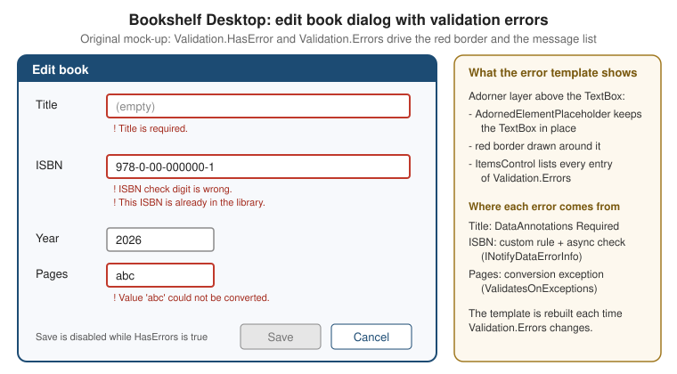

Validation
|
This content was generated with the assistance of AI and should be verified against the official documentation before being relied on in production. |
Validation answers one question: is what the user typed acceptable? In WPF the answer is produced by the binding
engine, which already sits between the control and the data. When the user changes a value, the binding converts it,
runs the validators attached to it, writes it to the source if all is well, and otherwise records one or more
ValidationError objects on the target element. The element then shows them through an error template, and the
rest of the UI can react to Validation.HasError. This page covers the four validation mechanisms, the
attached properties and error templates that present the result, and the bridge to the MVVM Toolkit.
The page was written against these versions, current in October 2026:
-
.NET 10 LTS, latest patch 10.0.13, with C# 14. .NET 11 is at release candidate 2 (general availability is expected 10 to 13 November 2026). The WPF binding validation API is unchanged between .NET Framework 4.8 and .NET 8, 9 and 10, so everything here applies to all of them; the .NET 10 WPF release notes do not list a change in this area.
-
CommunityToolkit.Mvvm 8.4.2 for
ObservableValidator, used in the examples. -
Windows App SDK 2.5.1 (stable channel) for the WinUI 3 comparison.
-
Visual Studio 2026 18.11.1.
What Microsoft Learn Provides, and What It Does Not
The official WPF data-binding documentation describes validation under "Data validation" in the binding overview,
and has a how-to for implementing binding validation (ValidationRule, ExceptionValidationRule,
IDataErrorInfo). The .NET API reference documents INotifyDataErrorInfo and ObservableValidator.
Microsoft Learn does not have a WPF-specific INotifyDataErrorInfo how-to. The interface is documented only as an
API reference page, and the WPF binding engine’s support for it (NotifyDataErrorValidationRule, on by default) is
mentioned in the reference for Binding.ValidatesOnNotifyDataErrors rather than in a tutorial. The bridge between
the interface and DataAnnotations, ObservableValidator, is documented by the MVVM Toolkit (see the MVVM Toolkit
page of this section for the toolkit as a whole). Where this page shows an INotifyDataErrorInfo implementation
with asynchronous checks, it is a pattern built on the documented interface, not an official sample.
The Validation Pipeline
A binding validates when it writes a value from the target to the source (TwoWay or OneWayToSource modes, on
the UpdateSourceTrigger event). It follows this order:
If a rule that runs before the source is updated fails, the source is not written, and the control keeps showing
the invalid text. That is the main difference from errors reported by IDataErrorInfo or INotifyDataErrorInfo,
which are checked after the setter has run, so the invalid value does reach the view model.
The Four Mechanisms
| Mechanism | Where the rule lives | Strengths | Limits |
|---|---|---|---|
|
In a class referenced from the binding in XAML |
Runs before the value reaches the source, can see the raw text, reusable across views |
The rule knows nothing about other properties; it sits in the view and can duplicate view-model rules |
|
The property setter or the value converter throws |
No extra class; works with existing guard code |
Exceptions as control flow; one message per failure; the exception message is shown to users |
|
The view model implements an indexer and |
Rules live next to the data; sees the whole object |
One message (a string) per property; synchronous; legacy interface |
|
The view model implements |
Several errors per property, entity-level errors, asynchronous validation, errors can be raised at any time |
More code to write by hand; the toolkit’s |
For new code the recommendation is INotifyDataErrorInfo through ObservableValidator, with ValidationRule kept
for rules about the text itself (format, characters) that must run before conversion. IDataErrorInfo is mostly
met in older code.
ValidationRule
A ValidationRule is an abstract class with one method to override,
Validate(object value, CultureInfo cultureInfo), which returns a ValidationResult. ValidationResult.ValidResult
signals success; new ValidationResult(false, "message") signals failure with an error content that ends up in
ValidationError.ErrorContent.
using System.Globalization;
using System.Windows.Controls;
namespace Bookshelf.Desktop.Validation;
public sealed class YearRule : ValidationRule
{
public int Min { get; set; } = 1450;
public int Max { get; set; } = DateTime.Now.Year + 1;
public override ValidationResult Validate(object value, CultureInfo cultureInfo)
{
var text = (value as string)?.Trim();
if (!int.TryParse(text, NumberStyles.Integer, cultureInfo, out var year))
{
return new ValidationResult(false, "Enter the year as a whole number.");
}
return year >= Min && year <= Max
? ValidationResult.ValidResult
: new ValidationResult(false, $"The year must be between {Min} and {Max}.");
}
}Source: Implement binding validation
The rule is added to the binding’s ValidationRules collection with the property element syntax, because a
markup extension cannot hold a collection of objects:
<TextBox Grid.Column="1" Grid.Row="2">
<TextBox.Text>
<Binding Path="Year" UpdateSourceTrigger="PropertyChanged" ValidatesOnExceptions="True">
<Binding.ValidationRules>
<local:YearRule Min="1450" ValidationStep="RawProposedValue" />
</Binding.ValidationRules>
</Binding>
</TextBox.Text>
</TextBox>Source: Implement binding validation
The properties of ValidationRule that matter:
| Property | Meaning |
|---|---|
|
When the rule runs: |
|
When |
|
Evaluated in order; the first failing rule at a step stops the later ones at that step |
A rule is a plain object that is not part of the element tree, so it has no DataContext and its properties cannot
be bound to view-model values. Keep rules self-contained and give them configuration through ordinary properties,
as Min and Max above.
Validating With Exceptions
ValidatesOnExceptions="True" adds an ExceptionValidationRule to the binding. If a value converter or the
property setter throws while the binding is updating the source, the exception becomes a ValidationError whose
ErrorContent is the exception message and whose Exception property holds the exception. This is what produces
the red border when a user types abc into a Pages box bound to an int: the default conversion fails and the
rule reports it.
namespace Bookshelf.Core;
public sealed class BookEntry
{
private int _pages;
public int Pages
{
get => _pages;
set
{
ArgumentOutOfRangeException.ThrowIfNegativeOrZero(value);
_pages = value;
}
}
}Source: Implement binding validation
The binding declares {Binding Pages, ValidatesOnExceptions=True}. The message is the framework’s, and so is not
localised or written for users, which is the main reason to prefer other mechanisms for anything beyond a prototype.
Throwing from a setter also makes the view model refuse invalid values rather than store them, which is sometimes
what is wanted.
IDataErrorInfo
IDataErrorInfo (namespace System.ComponentModel) has two members: string Error, an object-level message, and
the indexer string this[string columnName], which returns the message for one property, or an empty string (or
null) when the property is valid. The binding asks for it when ValidatesOnDataErrors="True" is set, which adds a
DataErrorValidationRule.
using System.ComponentModel;
namespace Bookshelf.Desktop.ViewModels;
public sealed class LegacyBookViewModel : IDataErrorInfo
{
public string Title { get; set; } = string.Empty;
public string Error => string.Empty;
public string this[string columnName] => columnName switch
{
nameof(Title) when string.IsNullOrWhiteSpace(Title) => "Title is required.",
nameof(Title) when Title.Length > 200 => "Title is limited to 200 characters.",
_ => string.Empty,
};
}Source: IDataErrorInfo interface
<TextBox Text="{Binding Title, ValidatesOnDataErrors=True, UpdateSourceTrigger=PropertyChanged}" />Source: Implement binding validation
The indexer is called when the binding updates the source and when the source raises PropertyChanged for the bound
property. The interface cannot report two errors on one property, cannot report errors asynchronously, and cannot
say "the object is invalid" except through Error, which a plain binding does not display.
INotifyDataErrorInfo
INotifyDataErrorInfo (namespace System.ComponentModel, since .NET Framework 4.5) fixes the limits of
IDataErrorInfo:
| Member | Contract |
|---|---|
|
|
|
The errors of one property; for |
|
Must be raised whenever the errors of a property (or of the entity) change; the argument names the property |
The binding engine listens to ErrorsChanged and calls GetErrors again for that property, so validation can
complete at any time, including after the user has moved on. The support is on by default
(Binding.ValidatesOnNotifyDataErrors is true), so no binding attribute is needed.
The next example implements the interface by hand, with a synchronous rule and an asynchronous uniqueness check
for the ISBN against IBookRepository. It is a Bookshelf Desktop pattern; the documentation provides the
interface contract, not this implementation.
using System.Collections;
using System.ComponentModel;
using Bookshelf.Core;
namespace Bookshelf.Desktop.ViewModels;
public sealed class IsbnEditor(IBookRepository repository) : INotifyPropertyChanged, INotifyDataErrorInfo
{
private readonly Dictionary<string, List<string>> _errors = [];
private CancellationTokenSource? _checking;
private string _isbn = string.Empty;
public event PropertyChangedEventHandler? PropertyChanged;
public event EventHandler<DataErrorsChangedEventArgs>? ErrorsChanged;
public bool HasErrors => _errors.Count > 0;
public string Isbn
{
get => _isbn;
set
{
if (_isbn == value) return;
_isbn = value;
PropertyChanged?.Invoke(this, new PropertyChangedEventArgs(nameof(Isbn)));
_ = ValidateIsbnAsync(value);
}
}
public IEnumerable GetErrors(string? propertyName) =>
propertyName is not null && _errors.TryGetValue(propertyName, out var list) ? list : Array.Empty<string>();
private async Task ValidateIsbnAsync(string value)
{
_checking?.Cancel();
_checking = new CancellationTokenSource();
var token = _checking.Token;
var errors = new List<string>();
if (value.Replace("-", "").Length is not (10 or 13))
{
errors.Add("An ISBN has 10 or 13 digits.");
}
SetErrors(nameof(Isbn), errors);
if (errors.Count > 0) return;
try
{
if (await repository.ExistsIsbnAsync(value, token))
{
errors.Add("This ISBN is already in the library.");
SetErrors(nameof(Isbn), errors);
}
}
catch (OperationCanceledException)
{
// A newer value superseded this check; its own result will be reported.
}
}
private void SetErrors(string propertyName, List<string> errors)
{
if (errors.Count == 0 && !_errors.Remove(propertyName)) return;
if (errors.Count > 0) _errors[propertyName] = errors;
ErrorsChanged?.Invoke(this, new DataErrorsChangedEventArgs(propertyName));
}
}Source: INotifyDataErrorInfo interface
IBookRepository.ExistsIsbnAsync(string, CancellationToken) is a method added to the repository interface of the
running scenario for this example. Because ValidateIsbnAsync resumes on the UI thread (the setter is called there
and await captures the synchronisation context), ErrorsChanged is raised on the UI thread. If errors are
produced on another thread, marshal the event to the dispatcher before raising it.
The Validation Attached Properties
The System.Windows.Controls.Validation class is the bridge between the binding engine and the visual tree. All its
members are attached properties and events, readable on any UIElement:
| Member | Meaning |
|---|---|
|
Read-only |
|
Read-only |
|
The |
|
Another element where the template is placed instead of the control itself (for composite controls) |
|
On a part of a template: names the control it acts as adorner site for |
|
Routed event raised when an error is added or removed, but only for bindings with |
ValidationError carries ErrorContent (the message, or any object), RuleInUse (the ValidationRule that
failed), Exception (set for exception errors) and BindingInError (the binding that produced it). To react in code, listen to Validation.Error on a container with
NotifyOnValidationError set on the bindings:
using System.Windows;
using System.Windows.Controls;
namespace Bookshelf.Desktop.Views;
public partial class EditBookDialog : Window
{
private int _errorCount;
public EditBookDialog()
{
InitializeComponent();
AddHandler(Validation.ErrorEvent, new RoutedEventHandler(OnValidationError));
}
private void OnValidationError(object sender, RoutedEventArgs e)
{
var args = (ValidationErrorEventArgs)e;
_errorCount += args.Action == ValidationErrorEventAction.Added ? 1 : -1;
SaveButton.IsEnabled = _errorCount == 0;
}
}Source: Implement binding validation
Counting events in the view works but duplicates the state the view model already has. Prefer binding the Save
command to the view model’s HasErrors (shown below).
Error Templates
By default, a control with Validation.HasError gets a red border drawn by the built-in error template. To change
the presentation, replace Validation.ErrorTemplate. The template content is placed in the adorner layer, above
the control, and must contain an AdornedElementPlaceholder, which marks where the original control is drawn. The
AdornedElement property of the placeholder gives access to the control and so to its Validation.Errors.
<Window.Resources>
<ControlTemplate x:Key="ErrorListTemplate">
<StackPanel>
<Border BorderBrush="Firebrick" BorderThickness="2" CornerRadius="2">
<AdornedElementPlaceholder x:Name="placeholder" />
</Border>
<ItemsControl ItemsSource="{Binding ElementName=placeholder, Path=AdornedElement.(Validation.Errors)}">
<ItemsControl.ItemTemplate>
<DataTemplate>
<TextBlock Foreground="Firebrick" FontSize="11" Text="{Binding ErrorContent}" />
</DataTemplate>
</ItemsControl.ItemTemplate>
</ItemsControl>
</StackPanel>
</ControlTemplate>
<Style TargetType="TextBox">
<Setter Property="Validation.ErrorTemplate" Value="{StaticResource ErrorListTemplate}" />
<Style.Triggers>
<Trigger Property="Validation.HasError" Value="True">
<Setter Property="ToolTip"
Value="{Binding RelativeSource={RelativeSource Self}, Path=(Validation.Errors)[0].ErrorContent}" />
</Trigger>
</Style.Triggers>
</Style>
</Window.Resources>Source: Implement binding validation
The parentheses in (Validation.Errors) mark an attached property in a binding path, and [0] selects the first
error. The result is the dialog drawn below: each field with errors is outlined and lists every message, and Save
is disabled while any error exists.

Practical limits of the adorner approach:
-
The adorner is drawn on top of the layout and takes no layout space, so the message list overlaps the controls below it unless the row has a margin reserved for it (the dialog above uses a
Marginof0,0,0,22on every field row). -
The adorner is clipped by the nearest clipping container. In a
ScrollVieweror aDataGridcell the message may be cut; setValidation.ValidationAdornerSiteto a named element inside the layout instead of relying on the overlay. -
The default red border is part of the template, so a replacement template that omits a border shows no outline at all. Always draw something around
AdornedElementPlaceholder. -
The template is created every time
HasErrorbecomestrue, so keep it light in long lists.
Bridging to ObservableValidator and DataAnnotations
ObservableValidator (package CommunityToolkit.Mvvm, namespace CommunityToolkit.Mvvm.ComponentModel) derives
from ObservableObject and implements INotifyDataErrorInfo on top of System.ComponentModel.DataAnnotations.
Validation attributes on a property are evaluated when the property is set through SetProperty(ref field, value,
true), or when the source generator’s [NotifyDataErrorInfo] attribute is applied to an [ObservableProperty].
The base class provides ValidateProperty, ValidateAllProperties, ClearErrors, GetErrors, HasErrors and the
ErrorsChanged event.
using System.ComponentModel.DataAnnotations;
using Bookshelf.Core;
using CommunityToolkit.Mvvm.ComponentModel;
using CommunityToolkit.Mvvm.Input;
namespace Bookshelf.Desktop.ViewModels;
// Shown with a repository for brevity; the canonical BookEditorViewModel of the MVVM Toolkit page returns a Book from ToBook().
public sealed partial class BookEditorViewModel(IBookRepository repository) : ObservableValidator
{
[ObservableProperty]
[NotifyDataErrorInfo]
[NotifyCanExecuteChangedFor(nameof(SaveCommand))]
[Required(ErrorMessage = "Title is required.")]
[MaxLength(200, ErrorMessage = "Title is limited to 200 characters.")]
public partial string Title { get; set; } = string.Empty;
[ObservableProperty]
[NotifyDataErrorInfo]
[NotifyCanExecuteChangedFor(nameof(SaveCommand))]
[RegularExpression(@"^(\d{9}[\dXx]|\d{13})$", ErrorMessage = "An ISBN has 10 or 13 digits without hyphens.")]
[CustomValidation(typeof(BookEditorViewModel), nameof(ValidateIsbnChecksum))]
public partial string Isbn { get; set; } = string.Empty;
[ObservableProperty]
[NotifyDataErrorInfo]
[NotifyCanExecuteChangedFor(nameof(SaveCommand))]
[Required(ErrorMessage = "Author is required.")]
public partial string Author { get; set; } = string.Empty;
[ObservableProperty]
[NotifyDataErrorInfo]
[NotifyCanExecuteChangedFor(nameof(SaveCommand))]
[Range(1450, 2100, ErrorMessage = "Year must be between 1450 and 2100.")]
public partial int Year { get; set; } = 2000;
public static ValidationResult? ValidateIsbnChecksum(string isbn, ValidationContext context) =>
IsbnChecksum.IsValid(isbn)
? ValidationResult.Success
: new ValidationResult("The ISBN check digit is wrong.");
private bool CanSave() => !HasErrors;
[RelayCommand(CanExecute = nameof(CanSave))]
private async Task SaveAsync(CancellationToken token)
{
ValidateAllProperties();
if (HasErrors) return;
await repository.AddAsync(new Book(0, Title, Author, Year, 0m, Isbn), token);
}
}Source: ObservableValidator
Notes on the example:
-
IsbnChecksum.IsValidis a small helper of the Bookshelf scenario, not a framework type, andAddAsyncis the repository method that stores a book. Both are defined in the scenario rather than in the documentation. -
The generated property forwards the DataAnnotations attributes, and
[NotifyDataErrorInfo]makes the generated setter callValidateProperty. Without it, the property is only validated whenValidateAllPropertiesruns. -
The page for
ObservablePropertystill shows fields. Partial properties are a C# 13 feature (on .NET 9 the toolkit neededLangVersionset topreview); with CommunityToolkit.Mvvm 8.4.1 or later and the default C# 14 of .NET 10, noLangVersionsetting is needed. -
Validation attributes are evaluated synchronously. The toolkit documentation does not describe asynchronous checks such as the repository lookup shown earlier, so a view model that needs one either implements
INotifyDataErrorInfoitself, asIsbnEditordoes, or runs the check in a command before saving.
The view then needs nothing beyond the binding. ValidatesOnNotifyDataErrors is on by default and the error
template from the previous section renders the messages:
<TextBox Text="{Binding Title, UpdateSourceTrigger=PropertyChanged}" />
<TextBox Text="{Binding Isbn, UpdateSourceTrigger=PropertyChanged}" />
<TextBox Text="{Binding Author, UpdateSourceTrigger=PropertyChanged}" />
<TextBox Text="{Binding Year, UpdateSourceTrigger=PropertyChanged}" />
<Button Content="Save" Command="{Binding SaveCommand}" IsDefault="True" />Source: ObservableValidator
The Year box mixes two mechanisms: a conversion failure from text to int is raised by the binding itself (and
needs ValidatesOnExceptions or the built-in conversion error), while [Range] runs only after a valid int
reaches the view model.
When Validation Runs
| Setting | Effect |
|---|---|
|
Validation runs when the control loses focus; the user sees errors late but only once |
|
Validation runs on every keystroke; errors appear and disappear while typing, which can be noisy for rules like "ISBN has 13 digits" |
|
Validation runs on |
|
With |
|
Validates when the source writes to the target, so invalid stored data is flagged on load |
|
Raises |
INotifyDataErrorInfo errors that exist at load time are displayed as soon as the binding connects, since the
binding queries GetErrors then. That is why a new, empty BookEditorViewModel should not call
ValidateAllProperties in its constructor: the user would see a form full of errors before typing. Validate on
change and on Save instead.
WPF, WinUI 3 and WinForms
| WPF | WinUI 3 | WinForms | |
|---|---|---|---|
Binding-engine validation |
|
No |
|
Error presentation |
|
Own UI, for example a |
|
|
Understood by the binding engine |
The interface can be implemented, but the binding does not display its errors automatically (verify against the Windows App SDK release you use; this is a claim made from knowledge, not from a Learn page) |
Not a binding feature (use |
MVVM Toolkit |
Works with the default bindings |
Works as a source of errors; the view reads |
Same, through the |
Pitfalls
-
The source is not updated when a
ValidationRulefails atRawProposedValue. The view model keeps the last valid value, so a Save command that reads the view model saves old data while the box shows the invalid text. Disable Save whileValidation.HasErroris true somewhere in the form, or move the rule to the view model. -
Validation.HasErroris per element. There is no built-in "the whole window is valid". Either use the view model’sHasErrors, or walk the logical tree to find invalid elements. -
IDataErrorInfomessages are strings. Exposing a localised string requires the view model to translate the message itself; do not returnResourceslookups that fail in the designer. -
Exceptions are expensive.
ValidatesOnExceptionsthrows and catches an exception on every invalid keystroke withUpdateSourceTrigger=PropertyChanged. Use it for conversion failures, not for business rules. -
Forgetting
ErrorsChanged. If a hand-writtenINotifyDataErrorInfoupdates its dictionary but does not raise the event, the UI keeps showing the old state. Raise it for every property whose error set changed, and also for entity-level errors (an empty ornullproperty name). -
Raising
ErrorsChangedoff the UI thread. The binding engine reacts to the event by updating UI state, so mutate the error collection and raise the event on the dispatcher thread. -
The error template replaces the default, it does not extend it. Keep an outline around
AdornedElementPlaceholderor the control looks valid. -
Hidden controls. A control in a collapsed tab still has its errors, so
HasErrorscan betruefor a field the user cannot see. Report the first invalid field and navigate to it. -
Trimming and AOT. DataAnnotations discovers attributes by reflection. WPF and WinForms do not support Native AOT or trimming (see the Windows App Platforms page of this section), so this is not a restriction today, but it matters if the same view models move to WinUI 3 with trimming.